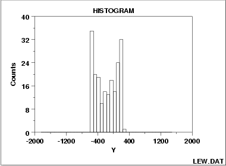

|
1.
Exploratory Data Analysis
1.3. EDA Techniques 1.3.3. Graphical Techniques: Alphabetic 1.3.3.14. Histogram
|
|||
| Symmetric, Bimodal Histogram |  | ||
| Description of Bimodal |
The mode of a distribution is that value which is most frequently
occurring or has the largest probability of occurrence. The sample
mode occurs at the peak of the histogram.
For many phenomena, it is quite common for the distribution of the response values to cluster around a single mode (unimodal) and then distribute themselves with lesser frequency out into the tails. The normal distribution is the classic example of a unimodal distribution. The histogram shown above illustrates data from a bimodal (2 peak) distribution. The histogram serves as a tool for diagnosing problems such as bimodality. Questioning the underlying reason for distributional non-unimodality frequently leads to greater insight and improved deterministic modeling of the phenomenon under study. For example, for the data presented above, the bimodal histogram is caused by sinusoidality in the data. |
||
| Recommended Next Step |
If the histogram indicates a symmetric, bimodal distribution, the
recommended next steps are to:
|
||